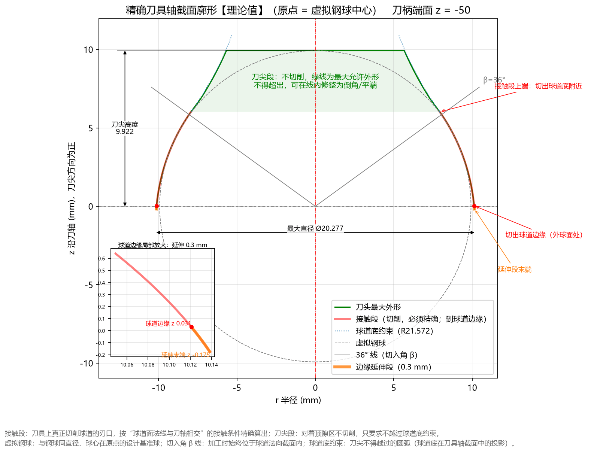

三分钟快速上手
本节以经典的 AC3300-G 星形套（椭圆球道截面） 为例，带您在三分钟内体验从载入参数、执行计算、审阅结果与图形，到导出数控磨刀 DXF 图纸和 CSV 点表的完整流程。

第一步：确认或载入示例参数
- 启动 TrackForm 软件。
- 点击顶部菜单栏的 文件(F) 载入示例参数 AC3300-G_参数（或者点击 文件(F) 恢复默认设置）。
- 此时左侧 基本参数 面板中已填入 AC3300-G 零件图纸的核心参数：
- ① 钢球与球道轨迹：
钢球直径 Dw = 19.844mm，节圆直径 PCD = 62.464mm，球道偏移 e = 4.27mm - ② 球道法向截面：
截面类型 = 椭圆，定义方式 = 给定相似度，接触角 α = 42.0°，相似度 k = 1.04，法向余量 = 0.0mm - ③ 刀具安装：
切入角 β = 36.0° - ④ 工件外形：
外球面直径 = 61.113mm，工件宽度 W = 23.1mm，球心至端面 H = 13.31mm
- ① 钢球与球道轨迹：
第二步：点击“计算”（或按 F5）
- 点击左侧面板中部醒目的绿色大按钮 ▶ 计 算 (F5)（或直接按键盘上的
F5键）。 - 按钮下方的状态栏会显示计算阶段与用时，约 0.8 秒 后状态栏变为绿色的
计算完成，同时左下方的 计算结果 面板和右侧的 6 个图形页签 全部自动刷新。
第三步：核对计算结果与审阅图形
1. 查看左下“计算结果”面板（可点击 展开 放大查看）
重点核对面板中带颜色标记的关键结论（详细解读见第 4 章：计算结果面板解读）：
截面：椭圆（给定相似度）
轨迹半径 Rp = 31.5225
椭圆半轴 a(横向) = 10.1762
椭圆半轴 b(径向) = 10.6436
椭圆中心高 uc = 0.6929（距球道底 10.6436）
相似度 = 1.0400
顶隙 = 0.0287 OK
球道边缘接触角 = 57.53°
接触段 r: 7.9269 ~ 10.1384
接触段 z: -0.1747 ~ 6.0205
刀头最大直径 = 20.2768
廓形单调(无自交) OK
过切校验 最小间隙 = -2.23e-07 OK
仿真最大过切 = 2.15e-07 OK
仿真接触区欠切 = 8.42e-06 OK
球道底欠切 = 0.0500（顶隙区，仅提示）
—— 单圆弧近似 ——
R=12.3600 圆心 -2.1920 / +1.0710 Ø20.3360
生成球道偏差 = 3.78 μm（±10） 合格
生成球道顶隙 = 0.0325 OK
- 顶隙与安全校核：算出的名义顶隙为
0.0287 mm（落在图纸要求的0.019 ~ 0.040 mm之间，显示绿色 OK）；廓形单调、过切校验、反向仿真均显示绿色 OK。 - 单圆弧近似刀具结论：可将成型刀简化为 圆弧半径 、圆心径向偏置 （交叉到刀轴另一侧）、圆心轴向位置 （距虚拟球心朝刀柄方向）、圆柱段直径 的单圆弧刀具；该圆弧刀切出的球道与理论椭圆截面的最大偏差仅为
3.78 μm（远小于轮廓度公差±10 μm），判定为绿色 合格！
2. 切换右侧图形页签审图
点击右侧顶部的页签标题（或按 Ctrl+1 ~ Ctrl+6）依次检查：
- 刀具廓形（
Ctrl+1）：查看红色切削接触段与绿色刀尖允许外形（如下图所示）。 - 加工姿态（
Ctrl+4）：检查刀具在球道两端摆动极限位置时，刀柄端面与星形套是否安全无干涉。 - 单圆弧近似（
Ctrl+6）：查看右下角偏差曲线是否完全处于两条红色公差虚线内部。

第四步：一键导出工程文件
根据您的加工与制图需求，在左侧 计算与导出 面板中点击对应的导出按钮：
- 采用单圆弧近似刀具磨刀（最常用）：
- 点击 圆弧刀具 DXF 默认保存为
arc_tool.dxf。图内圆弧刃口为标准 CADARC圆弧实体，标注齐全，可直接交给工具磨床编程磨刀。 - 如需编制客户格式的产品开发图，可继续点击 方程常数（Table 1） 和 基本轮廓（Table 2），导出图纸所需的常数表与 117 点基本轮廓坐标表。
- 点击 圆弧刀具 DXF 默认保存为
- 采用精确自由曲线成型刀具磨刀：
- 点击 刀具 DXF（保存为
tool_profile.dxf）和 刀具点表 CSV（保存为tool_profile_points.csv），获取沿弧长等距间隔0.01 mm的高密度精确坐标点表。
- 点击 刀具 DXF（保存为
导出完成后，软件会弹出提示框显示文件保存路径。您也可以随时点击菜单 帮助(H) 打开数据文件夹，在 output\ 子目录中找到所有导出的文件。